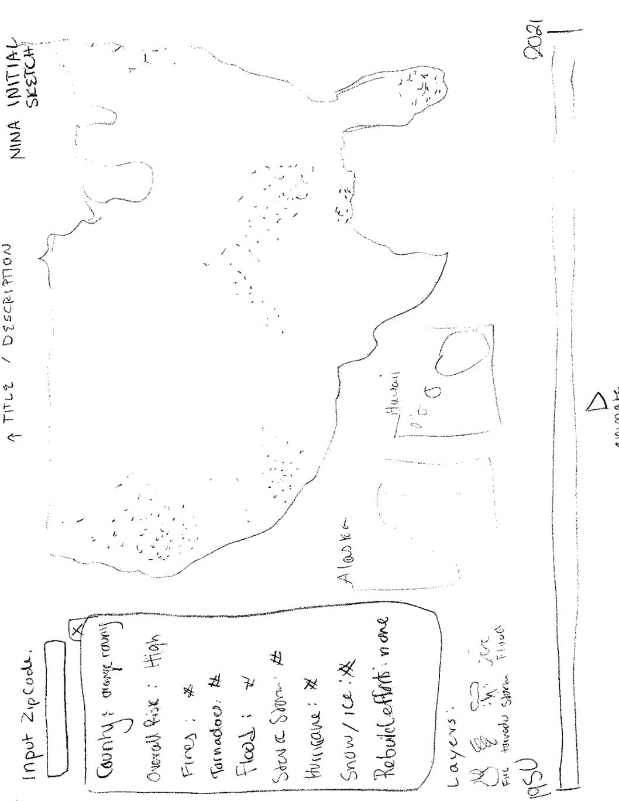
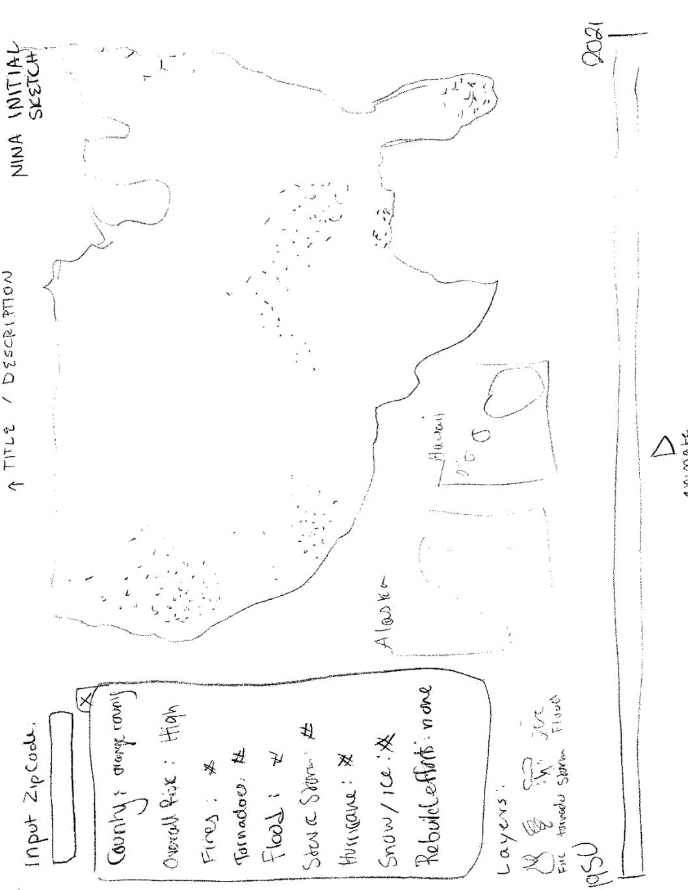
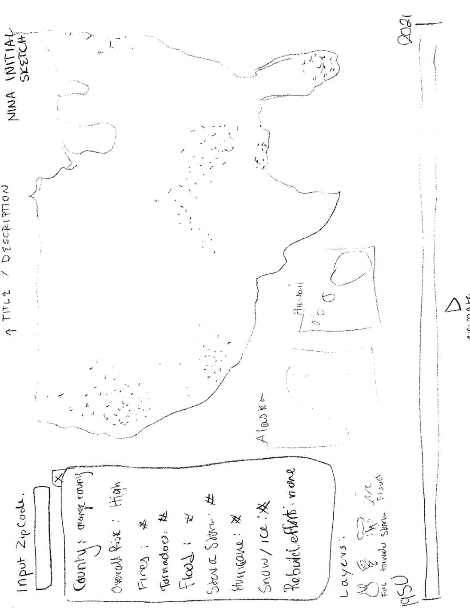

Repository Link: https://github.com/csex57/naturaldisasters
Student Information:
Mia Collymore Abbas, mcollymoreabbas@wustl.edu, 473645
Nina Redpath, ninaredpath@wustl.edu, 458234
Amee Rothman, arothman@wustl.edu, 475030
Oftentimes, climate change data is simply informational rather than actionable, thus we wanted to put a more applicable spin on presenting this data that will encourage and inform viewers on how to take action. As soon-to-be college graduates, geographical location is hot on our minds and there are tradeoffs to anywhere you choose to live. This map is a tool for people who are moving and want to know how prone their new location is to natural disasters. We also want to acknowledge the fact that certain geographical regions are neglected in terms of infrastructure and struggle to rebuild after a disaster, which is another factor to think about. We want to display the increasing number of natural disasters as a result of climate change, and acknowledge the impact that they have had on communities all over the country. We wanted to create a tool focused on natural disasters that is more helpful than just stressful, specifically for people who aren’t sure of where to live because of recent uptick in natural disasters. Rather than just creating an informational tool, we wanted it to be useful for this demographic you are just curious of natural disasters in history, this is a useful and informative tool.
We wanted to focus on the questions people might have about the climate, and natural disasters in a place that they are moving. We wanted to make these answers accessible so that one can be more informed before making a big decision, and moving to a new area.
| Question 1: | What are the most prominent types of natural disaster in a given county? |
| Question 2: | How frequently is that county struck by natural disasters? |
| Question 3: | Can we see trends in where specific disasters strike around the country? |
We were inspired by several other visualizations. The first was the Walmart visualization that we discussed in class. This visualization was an animation that demonstrated how quickly the Walmart corporation expanded acrross the US. Looking at the locations of walmarts on the map was a clear and understandable way to visualize large and complicated datasets. Additionally, our conversation about maps in class was inspiring to us, as it demonstrated how powerful and memorable they can be if relaying data.
We are using data from FEMA (Federal Emergency Management Agency): https://www.fema.gov/openfema-data-page/disaster-declarations-summaries-v2
for our initial analysis we looked at the structure of the dataset, and the values that it contains. We also thought about how we want to relay information to a user, and how that could be most clear and memorable. We decided on a map that can be brushed over time. we also decided that a side panel with more detailed information would be helpful to users. The FEMA file has a lot of different disasters, so we needed to figure out how to organize it best. For the purposes of our visualization, we decided that grouping by year adn then by state within that would be the most useful, but this is also subject to change. The benefit of processing your own data, is that you can reorganize it to best fit your needs. This data is taking from a csv file that lists all the disasters from 1953 to 2021, and there’s about sixty thousand total entries. This means it can be slow for each visualization to constantly have to load everything for every update. Part of the data cleanup meant omitting certain unnecessary data points. The disaster type of ‘biological,’ that focuses on epidemics, isn’t useful for the focus of our website, which is ecological disasters. A FEMA natural disaster is an extreme disaster where the epicenter doesn’t have the resources to recover on their own and FEMA has to intervene.
The first three sketches are our individual visions of what our page should look like, while the last mockup (made with figma) is the combined design that we have agreed on.

Final draft:
Our design has held many different forms, because each time someone noticed a glitch or thought of something that was making the website clunky, we’d write it down and think of how we could solve the issue in the coming days. This led to us moving our year chart within our popup bar, rather than having the year chart as its own visualization. This means that our map is more of the center of attention, which is important for the end goal of our project. This emphasis on the map also means that color schemes are super important, as we discussed in class it can be easy to have overwhelming color schemes especially when there’s a lot of different data to show.
Current Update as of 12/10/21
Final version, 12/20/21
This versions data looks very different from the other iteration of our project because we discovered an error in the way we were displaying disasters. Initially, we were only displaying the most recent disaster that had occured. In our final version we are displaying the most frequent disaster experienced in a given county.
Our visualization has a number of different interactive elements to it. When the map initially loads, you are able to search a county zipcode, or just click on any county shape that you see. Clicking on this will populate the pop up bar.
In the pop up bar you can hover over the risk score to learn more about how it was calculated, and you can also click on any section of the donut chart that you see. Clicking on this chart will pull up a modal with even further detail about the disasters in that county, such as specific names and dates of the disasters in question.

Clicking "Compare County" in the popup bar will trigger a second popup bar with which you can look at another county's data side by side with the initial county data. the same interactions with the visualizations are available here.
Also in the popup bar, there is a year brushing option. brushing this bar will change the map data to show only the most common disaster for each county, within the time frame indicated. below is an example of brushing the years 1985-2012

Lastly, our legend is also interactive. Clicking on a type of disaster shows only that specific disaster spread throughout the country.


One issue that we ran into during this project was how the data covered disasters in Alaska. Alaska is broken up into boroughs, rather than counties, and many of the disasters declared in the state are specific to specific reservations or regions. Therefore the data we used to map counties is slightly incompatible with the data that we used to get the disasters. For this reason, alaskan disasters are available to be displayed when a zipcode is searched, but appear as 0 when the region is clicked.
We learned a number of things about natural disasters during the process of creating this project.
Firstly, the most common type of disaster is much more varied by county that we would have thought, even in the same parts of the country. For example, in california two neighboring counties may have different most frequent disasters, with one being fires and the other being floods. This was not something that we expected when startig this project
Additionally, our interactive legend allows us to see the distribution of one type of disaster throughout the country. This shows us that fires are more commong in the west and south west. Tornadoes are more common in the midwest and south. Severe ice storms are concentrated in the east and south. However, water related storms, such as severe rain, flooding and hurricanes have occured all across the country.
There do not seem to be any counties that have not experienced any disasters since the 1950s
Lastly, through our disaster by year visualization, we saw that in nearly every county, the number of disasters has become more frequent in the past 30 years